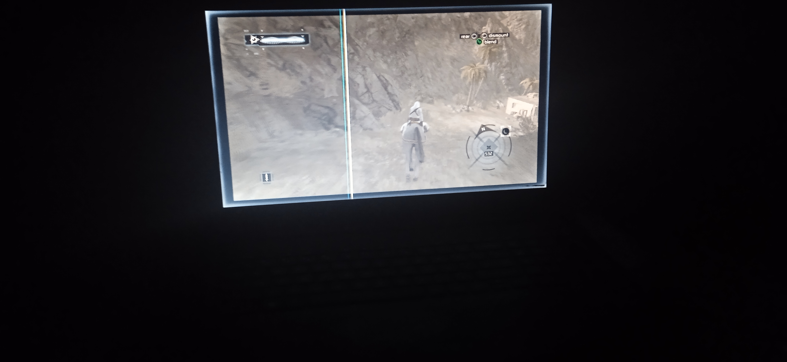

About My Hobbies

Apart from my academic responsibilities, I enjoy engaging in activities that allow me to express myself, relax and explore my interests. My hobbies provide a balance between my academic life and personal development.
My Favourite Activities
1. Drawing and Painting
I enjoy drawing and painting because they allow me to express my creativity through art. These activities help me develop imagination, attention to detail and artistic skills.
2. Gaming
Gaming is one of my favourite leisure activities. I enjoy exploring different games, completing challenges and experiencing interactive entertainment. Gaming also encourages strategic thinking, concentration and problem-solving.
3. Listening to Music
Music is an important part of my free time. I enjoy listening to different songs and genres because music helps me relax, stay entertained and improve my mood.
Personal Development
My hobbies contribute to my personal growth by encouraging creativity, patience, concentration and problem-solving. They also give me an opportunity to develop skills outside the classroom.